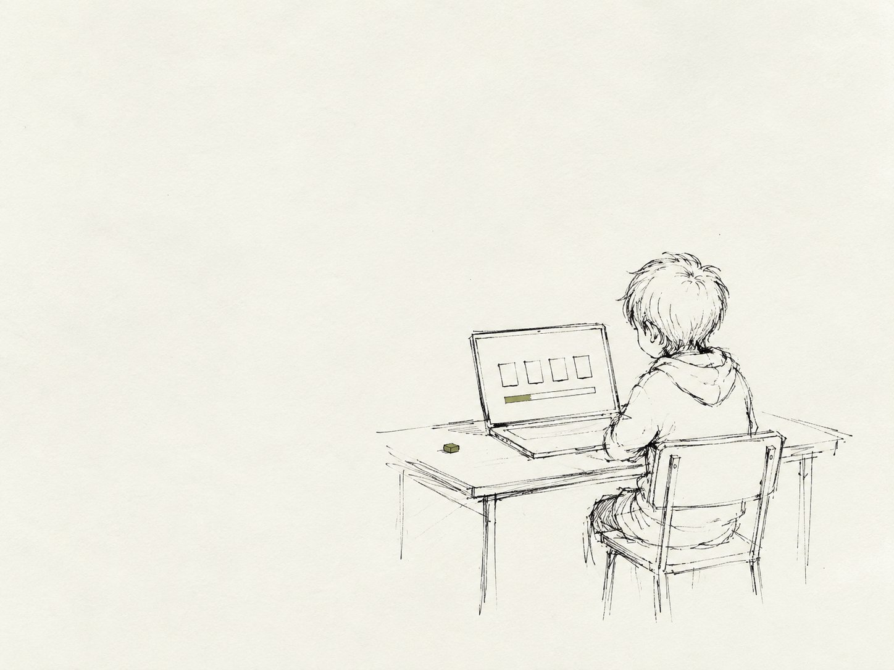
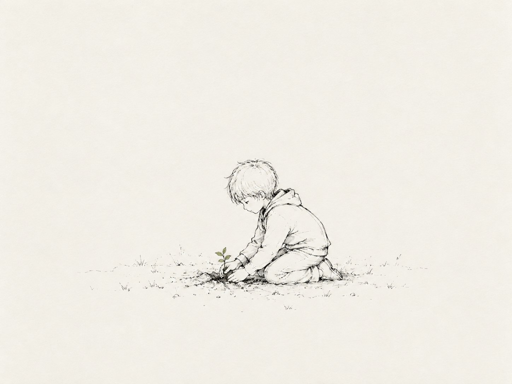
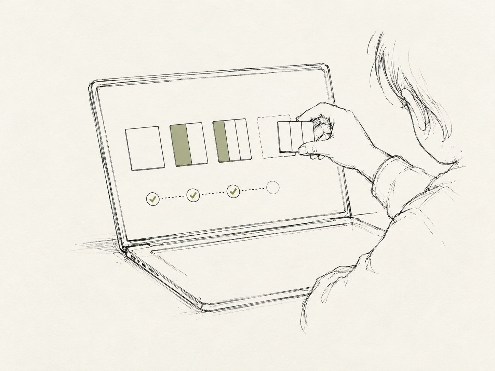
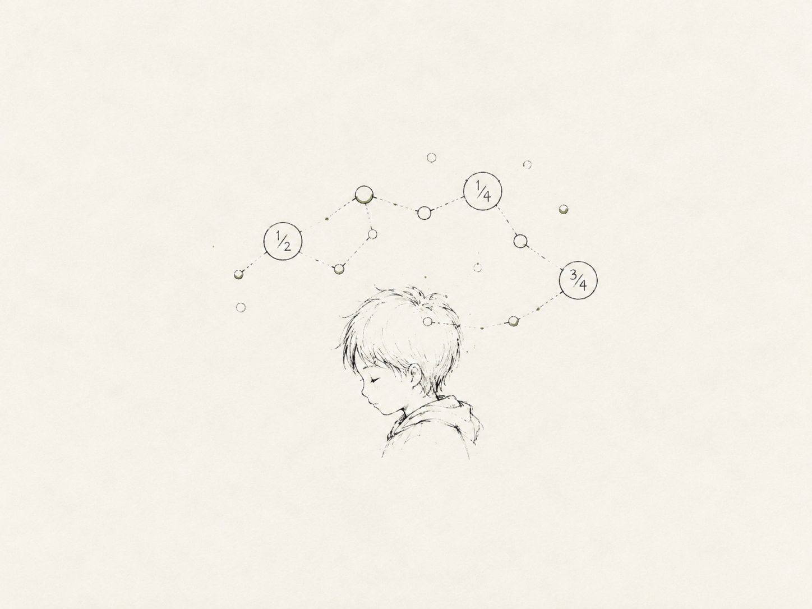
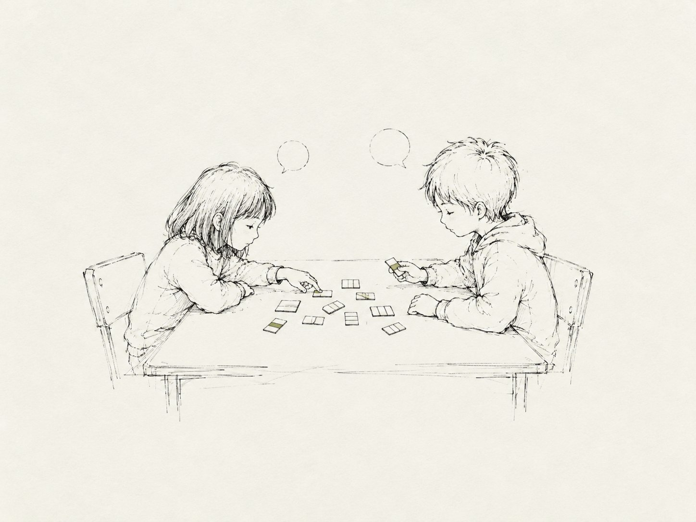
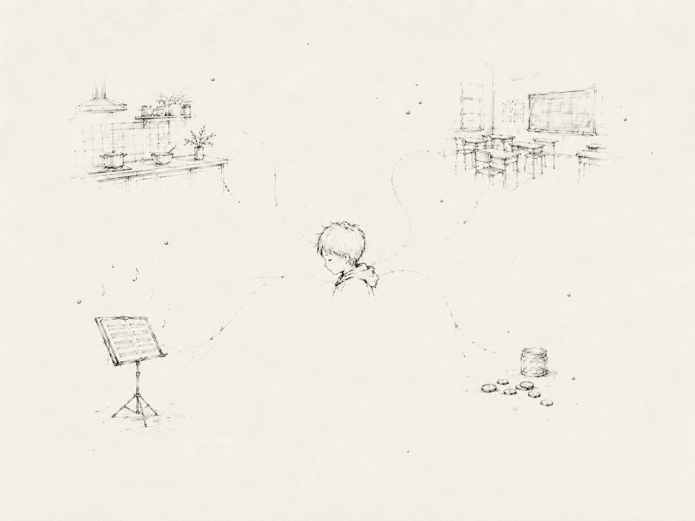
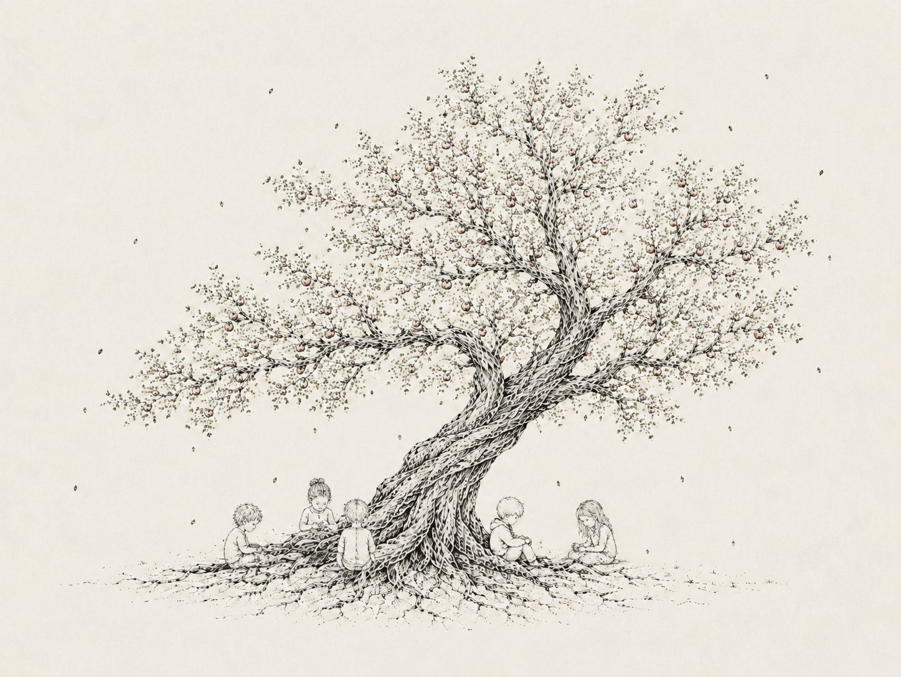

On building fish eyes for learning
What comes to your mind when you think about education?

A lot of brilliant people are working on technologies for education. Building tutors that adapt to each student, designing products that drill skills to mastery, measuring what works and what doesn't.
As researchers in this field, when we hear learning put this way, something feels off. At the same time, nothing seems wrong with this perspective. We are all trying to improve learning, aren't we?
Gert Biesta calls this the "learnification" of education: when learning crowds out the rest of what it was for.
She likes being outside. She looks after things. The plants on the windowsill, the class guinea pig, her little brother. Lately she's been working through fractions. She gets the first few steps right almost every time, then reaches the same spot near the end and gets stuck.

That's where behaviorists look. Learning is a change you can see and measure. Skills drilled and reinforced until they hold on their own.
As a behaviorist, what help would you give Maruko?

Cognitivists look under the behavior. Learning is what happens to the mind's machinery. Concepts, schemas, the way the pieces connect. They care about what one understands, not just what one can produce.
If you were a cognitivist, what would you offer Maruko?

Situated and distributed cognition folks widen the frame. Learning isn't just in one's head. It is inherently social, rooted in real settings. Spread across the tools in one's hands, the people one works with, the activity one is part of.
From a situated and distributed cognition perspective, what would you put in front of Maruko?

Sociocultural folks step outside the room entirely. Learning is cultural at its core, unfolding along many pathways, each one shaped by a community and its ways of knowing. It's never neutral—what constitutes knowledge, whose knowledge is represented, who one aspires to evolve with.
What would a sociocultural lens ask of Maruko's classroom?

Each of them is true. None is the wrong way to look. The problem is that each one, left alone, is a crop, and the other views fall out of frame.
Amelia Wattenberger, writing about how we read, reaches for a camera bag.
"A fish eye lens doesn't ask us to choose between focus and context."
We are inspired by Amelia's point here: holding both the fine detail of a view and the big picture at once. The other views stay visible at the edges.
The honest part is that these four views do not always agree. One cannot stop choosing, but they can notice and situate to see where any one view sits inside the bigger picture. The fish-eye lens holds both at once.
Amelia Wattenberger, "Fish eyes," wattenberger.com/thoughts/fish-eye (2024).
What made us uncomfortable was never the focus itself. It was failing to acknowledge that the other views were there too.— Vishal and Yoyo
Holding them together isn't blending them into a single blur. These perspectives genuinely disagree about what learning even is. Whichever you choose to focus on, you choose it. Holding them together means keeping the disagreement in frame, the way a good map keeps streets and highways on one screen without pretending either is a summary of the other.
Click each one, then click the lens you think it leans on.

And so the small seed of curiosity grew into something magnificent, when no single lens was watching.
With thanks to Amelia Wattenberger, whose "Fish eyes" gave us the lens.